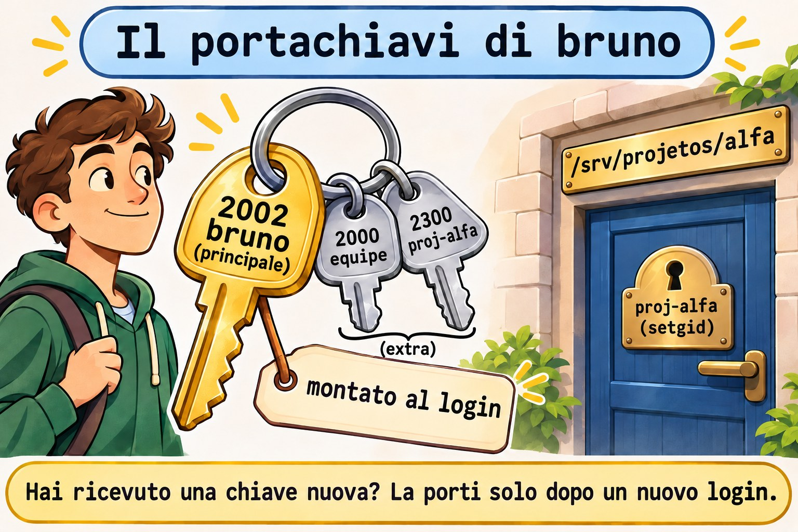
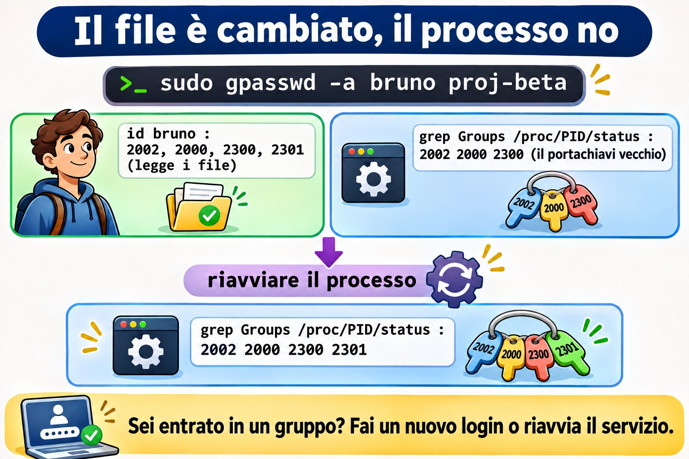
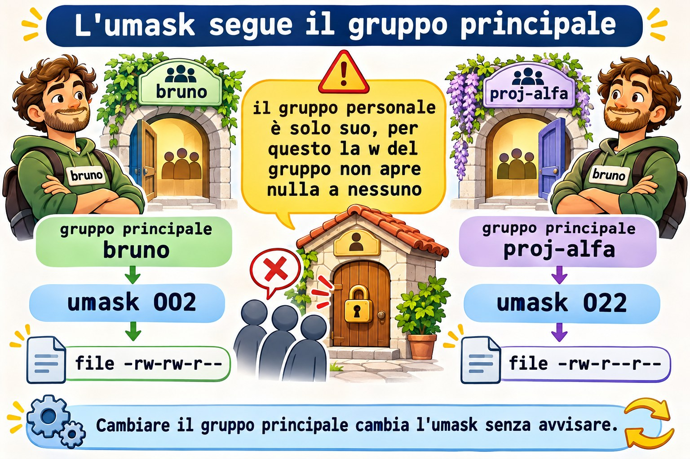

Lezione 10.3 · Gruppi e lavoro di squadra
In Windows crei un gruppo in AD, dai il permesso al gruppo sulla cartella e deleghi a un'altra persona il diritto di cambiare chi ne fa parte. Chi entra nel gruppo ottiene l'accesso solo dopo un nuovo logon. In Linux l'idea è la stessa, e perfino il trabocchetto del logon è identico. Nella Lezione 2.8 hai montato una cartella di team con setgid. In questa lezione organizzi più progetti, ognuno con il suo gruppo, deleghi la gestione di un gruppo senza dare sudo, capisci perché l'accesso nuovo non arriva a chi è già collegato e sistemi l'umask di chi lavora insieme.
Il cuore di questa lezione: separare il gruppo principale (uno solo, in
/etc/passwd) da quelli supplementari (in/etc/group); ricordare che chi ha il gruppo come principale non compare nell'elenco dei membri; creare una cartella per progetto coninstall -d -m 2770 -g; delegare la gestione congpasswd -A; sapere che un processo conserva i gruppi che aveva quando è nato; e sapere che cambiare il gruppo principale di qualcuno cambia il suoumask. Il resto è approfondimento.
| Scheda | |
|---|---|
| Modulo | M10 · Utenti e accesso privilegiato, lezione 3 di 4 |
| Quando | Settimana 15 |
| Alla fine | Monti gruppi di progetto con cartelle proprie, deleghi la gestione di un gruppo e spieghi perché un accesso nuovo non funziona ancora |
| Prerequisiti | Lezioni 2.7, 2.8, 8.5 e 10.2 |
| Durata | circa 2h |
| Snapshot | m10a3-inicio e m10a3-fim su rocky-lab e debian-lab |
1 · Riscaldamento
Rispondi prima di leggere.
getent group equipenon elenca Bruno, eppure lui scrive in/srv/equipe. Come mai?- Hai messo Bruno in un gruppo nuovo. Era già collegato. Ha l'accesso?
- Ana coordina il progetto Alfa. Le serve
sudoper aggiungere qualcuno al gruppo del progetto?
2 · Perché conta
| La richiesta | La risposta sbagliata | Cosa provoca |
|---|---|---|
| "Elenca chi ha accesso al progetto" | Solo getent group | Mancano le persone che hanno il gruppo come principale |
| "Sono entrato nel gruppo e continuo a non avere accesso" | Toccare i permessi della cartella | Il problema è la sessione vecchia; la cartella era giusta |
| "La coordinatrice vuole aggiungere gente al suo gruppo" | Darle sudo per gpasswd | Con sudo cambia qualsiasi gruppo, compreso wheel |
| "Metti il gruppo del progetto come principale di tutti" | usermod -g proj-alfa su ognuno | Il loro umask diventa 022, e i colleghi smettono di modificare i file gli uni degli altri |
| "Cancella il gruppo del vecchio progetto" | groupdel con la cartella ancora lì | I file restano con un numero al posto del gruppo |
3 · Modello mentale
Pensa a un portachiavi. Ogni persona ha una chiave principale, quella che va sul file nuovo che crea, e un mazzo di chiavi extra, una per ogni gruppo di cui fa parte. Il portachiavi viene montato al login: chi riceve una chiave nuova comincia a portarla solo quando rimonta il portachiavi. E ogni cartella di progetto ha una serratura sola: il gruppo del progetto, che il setgid passa a ogni file creato lì dentro.
/etc/passwd bruno:x:2002:2002:... ← chave principal (GID 2002, o grupo bruno)
/etc/group equipe:x:2000:ana,bruno ← chaves extras: quem está na lista
proj-alfa:x:2300:ana,bruno
/etc/gshadow proj-alfa:!:ana:ana,bruno ← quem pode mudar a lista: ana
login do bruno → o chaveiro é montado: 2002, 2000, 2300
todo processo filho herda o mesmo chaveiro
entrou num grupo depois? → o chaveiro só muda num login novo

Ponte Windows
| In Windows | In Linux | Dove il paragone inganna |
|---|---|---|
| Gruppo di sicurezza di AD | Gruppo di /etc/group | Linux non annida i gruppi: un gruppo dentro un gruppo non esiste |
| "Gruppo primario" dell'utente | Gruppo principale di /etc/passwd | In Linux conta ogni giorno: è il gruppo dei file che la persona crea |
| "Gestito da", con il diritto di cambiare i membri | gpasswd -A (amministratore del gruppo) | Sta in /etc/gshadow, e vale solo per quel gruppo |
| Token di accesso montato al logon | Gruppi del processo, montati al login | Identico: sei entrato nel gruppo, fai un login nuovo |
| Permesso di lettura per i revisori | ACL di gruppo (Lezione 8.5) | Il modo ha un solo gruppo; il secondo gruppo ha bisogno di una ACL |
4 · L'essenziale
Principale e supplementari
| Tipo | Dove sta | Quanti | Cosa decide |
|---|---|---|---|
| Principale | Quarto campo di /etc/passwd | Uno | Il gruppo dei file che la persona crea (fuori dalle cartelle con setgid) |
| Supplementare | Quarto campo di /etc/group | Diversi | L'accesso a cartelle e file di quel gruppo |
Con USERGROUPS_ENAB yes in login.defs, il default di entrambe le distribuzioni, ogni useradd crea anche un gruppo personale, con lo stesso nome. È per questo che il gruppo può avere w nell'umask (Lezione 2.7): nessun altro sta nel gruppo personale.
Il trabocchetto dell'elenco: /etc/group elenca solo i membri supplementari. Per conoscere tutti i membri di un gruppo, somma i due:
getent group equipe | cut -d: -f4
getent passwd | awk -F: '$4 == 2000 {print $1}'Una cartella per progetto
sudo groupadd -g 2300 proj-alfa
sudo install -d -m 2770 -o root -g proj-alfa /srv/projetos/alfainstall -d crea la cartella già con proprietario, gruppo e modo, in un solo comando. 2770: setgid, tutto per il proprietario e il gruppo, niente per gli altri.
Chi gestisce l'elenco
| Comando | Chi può lanciarlo | Fa |
|---|---|---|
gpasswd -A ana proj-alfa | root | Ana diventa amministratrice del gruppo |
gpasswd -a bruno proj-alfa | root o un amministratore del gruppo | Aggiunge |
gpasswd -d bruno proj-alfa | root o un amministratore del gruppo | Toglie |
gpasswd -M ana,bruno proj-alfa | root o un amministratore del gruppo | Sostituisce l'elenco intero |
gpasswd è setuid: Ana lo lancia senza sudo, e lui controlla in /etc/gshadow se lei amministra quel gruppo.
Il portachiavi si monta al login
| Dove | Quando arrivano i gruppi nuovi |
|---|---|
| Sessione SSH o console | Al prossimo login |
| Servizio di systemd | Al prossimo restart |
sudo -u bruno ... | Subito: sudo rimonta i gruppi |
| Shell attuale | newgrp apre una shell nuova con il gruppo (Lezione 2.6) |
Per vedere i gruppi di un processo già in esecuzione: grep Groups /proc/PID/status. id bruno mostra ciò che c'è nei file, non ciò che il processo porta con sé.


Da dove viene l'umask
| Dove | Rocky | Debian |
|---|---|---|
UMASK e USERGROUPS_ENAB in /etc/login.defs | Letti | Letti |
| Chi lo applica al login | /etc/profile e /etc/bashrc, oppure pam_umask | pam_umask, nelle versioni recenti |
| Regola del gruppo personale | Se il nome del gruppo principale è uguale a quello dell'utente, 002; altrimenti, 022 | La stessa |
La conseguenza pratica: chi cambia il gruppo principale di qualcuno in un gruppo di progetto gli cambia, senza volerlo, l'umask in 022.


Rocky × Debian
| Rocky | Debian | |
|---|---|---|
groupadd, gpasswd, install | Uguali | Uguali |
| Strumento amichevole | Non c'è | adduser bruno proj-alfa aggiunge a un gruppo |
umask di un utente con gruppo personale | Di solito 0002 | Di solito 0002; dipende dalla versione |
| Dove cercare la regola | grep -n umask /etc/profile /etc/bashrc | grep -rn umask /etc/pam.d/common-session /etc/login.defs |
setfacl | Già installato | Pacchetto acl, se manca (Lezione 8.5) |
5 · Lab guidato
Passo 0 · Snapshot e stato. In Proxmox: qm snapshot 201 m10a3-inicio e qm snapshot 202 m10a3-inicio. Su rocky-lab:
id ana
id bruno
getent group equipe
sudo stat -c '%A %U:%G %n' /srv/equipe
sudo passwd -S brunoAna e Bruno hanno il gruppo personale come principale (gid=2001(ana) e gid=2002(bruno)) e equipe come supplementare. Bruno ha la password che hai definito nella Lezione 10.2.
Passo 1 · Principale e supplementari.
id -gn bruno
id -Gn bruno
grep -E '^(bruno|equipe):' /etc/group
getent passwd | awk -F: '$4 == 2000 {print $1}'Il primo mostra solo il principale, il secondo tutti. In /etc/group, il gruppo bruno ha l'elenco dei membri vuoto: è il principale di Bruno, e il principale non entra nell'elenco. L'awk cerca chi ha equipe (2000) come principale: per ora, nessuno.
Passo 2 · Due progetti.
sudo groupadd -g 2300 proj-alfa
sudo groupadd -g 2301 proj-beta
sudo install -d -m 0755 /srv/projetos
sudo install -d -m 2770 -o root -g proj-alfa /srv/projetos/alfa
sudo install -d -m 2770 -o root -g proj-beta /srv/projetos/beta
sudo gpasswd -a ana proj-alfa
ls -l /srv/projetosLe due cartelle compaiono come drwxrws---, una per gruppo. Ana è in Alfa; in Beta non c'è nessuno.
Passo 3 · Delegare Alfa ad Ana.
sudo gpasswd -A ana proj-alfa
sudo getent gshadow proj-alfa
sudo -u ana gpasswd -a bruno proj-alfa
getent group proj-alfagshadow mostra Ana nel terzo campo, quello degli amministratori. Ha aggiunto Bruno senza sudo: qui sudo -u ana serve solo a te per agire come lei. Ora prova a toccare Beta:
sudo -u ana gpasswd -a bruno proj-betaLa risposta è gpasswd: Permission denied.: amministra Alfa, e solo Alfa.
Passo 4 · Il portachiavi vecchio. Fai girare un processo di Bruno, come se fosse una sessione aperta:
sudo systemd-run --uid=bruno --unit=lab103 sleep 600
pid=$(systemctl show -p MainPID --value lab103)
grep Groups /proc/$pid/statusLa riga mostra numeri: 2002, 2000 e 2300. Ora aggiungi Bruno a Beta:
sudo gpasswd -a bruno proj-beta
id bruno
grep Groups /proc/$pid/statusid mostra già proj-beta, perché legge i file. Il processo continua a non avere il 2301: il suo portachiavi è stato montato prima. Riavvia e controlla:
sudo systemctl stop lab103
sudo systemd-run --uid=bruno --unit=lab103 sleep 600
pid=$(systemctl show -p MainPID --value lab103)
grep Groups /proc/$pid/status
sudo systemctl stop lab103Ora il 2301 compare. Con una persona è lo stesso: uscire e rientrare.
Passo 5 · L'umask di chi lavora insieme.
grep -E '^(UMASK|USERGROUPS_ENAB)' /etc/login.defs
sudo su - bruno -c umask
sudo su - bruno -c 'touch /srv/projetos/alfa/plano.txt'
sudo stat -c '%A %U:%G %n' /srv/projetos/alfa/plano.txt
sudo -u ana sh -c 'echo "revisado" >> /srv/projetos/alfa/plano.txt'L'umask di Bruno è quello che hai annotato nella Lezione 2.7, di solito 0002. Il file nasce -rw-rw-r--, di Bruno, con il gruppo proj-alfa che arriva dal setgid, e Ana riesce a modificarlo.
Passo 6 · Chi legge soltanto. La revisora Lia deve leggere Alfa, senza cambiare nulla:
sudo groupadd -g 2302 revisao
sudo useradd -u 2310 -c "Lia Revisora" -m -s /bin/bash -G revisao lia
sudo setfacl -m g:revisao:rx -m d:g:revisao:rx /srv/projetos/alfa
sudo -u lia ls /srv/projetos/alfa
sudo -u lia cat /srv/projetos/alfa/plano.txt
sudo -u lia touch /srv/projetos/alfa/lia.txtElenca e legge, e il touch dà Permission denied. ls -ld /srv/projetos/alfa ora mostra un + alla fine del modo: la cartella ha una ACL. La riga con d: vale per i file che devono ancora nascere (Lezione 8.5).
Passo 7 · debian-lab. Ripeti i passi da 0 a 6. Nel Passo 5, confronta l'umask con quello di Rocky e cerca da dove arriva:
grep -rn umask /etc/pam.d/common-session /etc/login.defsDecidi 1
Bruno è uscito dal progetto Alfa, e hai lanciato gpasswd -d bruno proj-alfa. Ha una sessione SSH aperta da stamattina. Il suo accesso alla cartella è finito?
A) Sì, subito. B) No: la sessione aperta porta il gruppo finché non termina; chiudi le sue sessioni. C) Solo dopo aver riavviato il server.
Scegli un'opzione prima di continuare.
| Se hai scelto | Risultato | Perché |
|---|---|---|
| A | Sbagliato | I processi già aperti conservano i gruppi che avevano |
| B | Giusto | Chiudi con sudo loginctl terminate-user bruno e, se fa girare un servizio, riavvia il servizio |
| C | Esagerato | Basta terminare i suoi processi |
Da ricordare: togliere dal gruppo cambia i file; chi è già collegato perde l'accesso solo quando esce.
Decidi 2
Ana coordina Alfa e vuole aggiungere e togliere persone da sola. Come?
A) Una regola di sudo per /usr/bin/gpasswd. B) gpasswd -A ana proj-alfa. C) Mettere Ana in wheel.
Scegli un'opzione prima di continuare.
| Se hai scelto | Risultato | Perché |
|---|---|---|
| A | Pericoloso | Con sudo cambia qualsiasi gruppo, compresi wheel e sudo |
| B | Giusto | Amministra solo quel gruppo, senza sudo |
| C | Molto pericoloso | Diventa amministratrice dell'intero server |
Da ricordare: delega il gruppo, non root.
6 · Rompi e ripara
Guasto 1 · Il membro che non compare
sudo usermod -g equipe bruno
sudo gpasswd -d bruno equipe
getent group equipe | cut -d: -f4
sudo -u bruno touch /srv/equipe/teste-bruno.txt && echo gravouSintomo: Bruno è sparito dall'elenco di equipe e continua a scrivere nella cartella del team. Se il ciclo di chage della Lezione 10.2 girasse adesso, resterebbe senza la politica delle password.
Indagine: id bruno mostra gid=2000(equipe). L'awk del Passo 1 ora trova Bruno. Nota anche che usermod -g ha passato a equipe i file della cartella personale che erano del gruppo bruno: il ritorno, nel Guasto 2, annulla questo.
Causa: equipe è diventato il suo gruppo principale, e il principale non entra nell'elenco di /etc/group.
Riparazione: non ancora: lascialo così per il Guasto 2. Resta la regola: ogni script che elenca i membri di un gruppo usa i due comandi del Passo 1.
Guasto 2 · I colleghi che non modificano
sudo su - bruno -c umask
sudo su - bruno -c 'touch /srv/projetos/alfa/v2.txt'
sudo stat -c '%A %U:%G %n' /srv/projetos/alfa/v2.txt
sudo -u ana sh -c 'echo "nota" >> /srv/projetos/alfa/v2.txt'Sintomo: il file nasce -rw-r--r--, e Ana riceve Permission denied.
Indagine: l'umask di Bruno, che era 0002, ora è 0022. Non è cambiato nulla né in login.defs né nella cartella.
Causa: la regola del gruppo personale: il gruppo principale di Bruno (equipe) non ha più il suo nome, e il login applica 022.
Riparazione: rimetti il gruppo personale come principale e equipe come supplementare; correggi il file nato sbagliato:
sudo usermod -g bruno bruno
sudo gpasswd -a bruno equipe
sudo chmod g+w /srv/projetos/alfa/v2.txt
sudo rm /srv/equipe/teste-bruno.txt
id bruno
sudo su - bruno -c umaskGuasto 3 · Il gruppo diventato un numero
sudo groupdel proj-beta
ls -ld /srv/projetos/betaSintomo: la cartella compare con 2301 al posto del gruppo.
Indagine: getent group 2301 non risponde nulla. sudo find / -xdev -nogroup trova la cartella (Lezione 10.1).
Causa: groupdel cancella la riga di /etc/group, e non tocca il disco. Ha accettato perché proj-beta non era il principale di nessuno.
Riparazione: ricrealo con lo stesso numero, e la cartella torna ad avere un nome:
sudo groupadd -g 2301 proj-beta
ls -ld /srv/projetos/betaI membri, però, non tornano: Bruno va aggiunto di nuovo. Prima di cancellare un gruppo, cerca i suoi file con find / -xdev -group NOME.
Pulizia
sudo userdel -r lia
sudo rm -r /srv/projetos
sudo groupdel proj-alfa
sudo groupdel proj-beta
sudo groupdel revisao
id ana
id bruno
sudo find / -xdev \( -nouser -o -nogroup \) -ls 2>/dev/nullAna e Bruno tornano allo stato del Passo 0: gruppo personale come principale, equipe come supplementare. Il find torna vuoto.
7 · Trappole
| Trappola | Cosa succede | Come evitarla |
|---|---|---|
Elencare i membri solo da /etc/group | Mancano quelli che hanno il gruppo come principale | Aggiungere l'awk su /etc/passwd |
| Aspettarsi l'accesso senza un login nuovo | "Sono entrato nel gruppo e non funziona" | Uscire e rientrare; riavviare il servizio |
usermod -G grupo senza -a | Toglie la persona da tutti gli altri gruppi | Sempre -aG, oppure gpasswd -a |
| Gruppo di progetto come principale | L'umask diventa 022 | Gruppo personale come principale, progetto come supplementare |
sudo per gpasswd | La persona cambia qualsiasi gruppo | gpasswd -A su quel gruppo |
groupdel con file sul disco | File con un numero al posto del nome | find -group prima |
Più di 16 gruppi e NFS con AUTH_SYS | Il server NFS vede solo i primi 16 | Meno gruppi per persona; NFS arriva nell'M13 |
8 · Quiz
Rispondi senza guardare. Le soluzioni sono alla fine della lezione.
- Dove sta il gruppo principale di un account, e dove stanno i supplementari?
- Perché un membro di un gruppo può non comparire in
getent group? - Cosa permette ad Ana
gpasswd -A ana proj-alfa, e cosa non permette? - Hai aggiunto Bruno a un gruppo. Perché un processo che aveva già aperto non ha ottenuto l'accesso?
- Perché cambiare il gruppo principale di qualcuno può cambiare il suo
umask? - Hai cancellato un gruppo e la cartella è rimasta con un numero. Come le restituisci il nome?
9 · Promemoria
Da sapere a memoria:
| Voglio... | Comando |
|---|---|
| Gruppo principale e tutti | id -gn NOME e id -Gn NOME |
| Tutti i membri | getent group G | cut -d: -f4 e getent passwd | awk -F: '$4 == GID {print $1}' |
| Cartella di progetto | sudo install -d -m 2770 -o root -g G /srv/projetos/P |
| Delegare il gruppo | sudo gpasswd -A NOME G |
| Aggiungere e togliere | gpasswd -a NOME G e gpasswd -d NOME G |
| Gruppi di un processo | grep Groups /proc/PID/status |
Da consultare:
| Voglio... | Comando |
|---|---|
| Amministratori del gruppo | sudo getent gshadow G |
| Sostituire l'elenco intero | gpasswd -M a,b,c G |
| Chiudere le sessioni di qualcuno | sudo loginctl terminate-user NOME |
umask di un login | sudo su - NOME -c umask |
| Gruppo che legge soltanto | sudo setfacl -m g:G:rx -m d:g:G:rx PASTA |
| File di un gruppo | sudo find / -xdev -group G |
Flashcard:
- Gruppo principale → uno solo, in
/etc/passwd. - Elenco di
/etc/group→ solo i supplementari. gpasswd -A→ amministra quel gruppo, senzasudo.- Gruppo nuovo → arriva al prossimo login.
- Gruppo principale cambiato →
umask022. groupdel→ cancella il nome, non i file.
10 · Checklist e chiusura
- [ ] Distinguo il gruppo principale dal supplementare ed elenco tutti i membri di un gruppo
- [ ] Creo gruppi di progetto con cartelle
2770e setgid - [ ] Delego la gestione di un gruppo con
gpasswd -A - [ ] Spiego perché un accesso nuovo vale solo con un login nuovo, e vedo i gruppi di un processo
- [ ] So da dove viene l'
umaske perché cambia con il gruppo principale - [ ] Do accesso in sola lettura a un secondo gruppo con una ACL
- [ ] Lascio Ana e Bruno come erano
Ultimo esercizio, senza guardare la lezione: su debian-lab, crea il gruppo proj-gama (GID 2303) con la cartella /srv/gama, metti Bruno come amministratore, fagli aggiungere Ana e dimostra che Ana modifica un file creato da Bruno. Annulla tutto.
Snapshot di fine (in Proxmox):
qm snapshot 201 m10a3-fim
qm snapshot 202 m10a3-fim11 · Nella vita reale
Missione, sola lettura. Su un server Linux che amministri (o con autorizzazione), lancia solo:
getent group | awk -F: '$3 >= 1000 && $3 < 60000 {print $3, $1, $4}' | sort -n
getent passwd | awk -F: '$3 >= 1000 && $3 < 60000 {print $1, $4}'
sudo getent gshadow | awk -F: '$3 != "" {print $1, $3}'
grep -E '^(UMASK|USERGROUPS_ENAB)' /etc/login.defsDomande a cui rispondere:
- Qualche persona ha un gruppo di progetto come principale? Il suo
umaskè giusto? - Qualche gruppo ha un amministratore? Qualcuno lo sa?
- Quanti gruppi ha la persona con più gruppi? Supera i 16?
12 · Approfondire quando vuoi
man gpasswd,man gshadow: amministratori, membri e password di gruppo.man pam_umask,man login.defs: la regola del gruppo personale, eHOME_MODE.man credentials: UID, GID e gruppi supplementari di un processo.man systemd.exec:SupplementaryGroups=eUMask=, per dare gruppi eumaska un servizio senza toccare l'account.
DeepTutor (http://10.1.0.149:3782, KB "Curso Linux Sysadmin"):
!explica grupo principal e suplementar com a metáfora do chaveiro!feynman por que um grupo novo só vale depois de um login novo!quiz Aula 10.3, 5 perguntas sobre grupos, gpasswd e umask
Soluzioni commentate
Riscaldamento
equipeè il suo gruppo principale, in/etc/passwd. L'elenco di/etc/groupmostra solo i supplementari.- No, se non fa un login nuovo. La sua sessione porta i gruppi che aveva quando è entrato.
- No. Con
gpasswd -A ana proj-alfa, aggiunge e toglie membri di quel gruppo da sola.
Quiz
- Il principale sta nel quarto campo di
/etc/passwd; i supplementari, nel quarto campo di ogni riga di/etc/group. - Perché l'elenco di
/etc/groupcontiene solo i supplementari. Chi ha il gruppo come principale compare solo in/etc/passwd. - Permette di aggiungere, togliere e sostituire l'elenco dei membri di
proj-alfa, senzasudo. Non permette di toccare nessun altro gruppo, né i permessi delle cartelle. - Perché i gruppi di un processo vengono montati quando nasce e passano ai figli. Il processo va riavviato, oppure la persona deve fare un login nuovo.
- Perché il login dà
002solo quando il gruppo principale ha lo stesso nome dell'utente. Con un altro gruppo come principale, applica022. - Ricreando il gruppo con lo stesso GID:
groupadd -g NÚMERO NOME. I membri vanno aggiunti di nuovo.